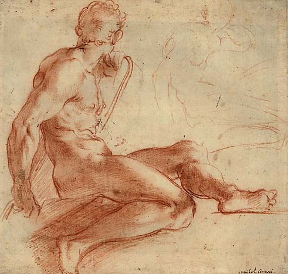

Studio di figura maschile
Ambito carraccesco, ultimo decennio del XVI secolo
Studio di nudo maschile in torsione, probabilmente preparatorio per una figura ad affresco.
- Tipologia
- Disegno
- Luogo
- Bologna
- Autore o ambito
- Ambito carraccesco
- Datazione
- ultimo decennio del XVI secolo
- Materia e tecnica
- Sanguigna su carta vergellata
- Misure
- mm 410 × 270
- Licenza
- Pubblico dominio